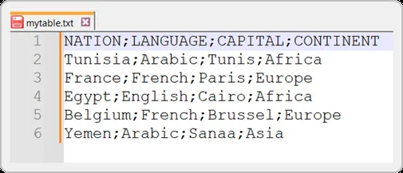
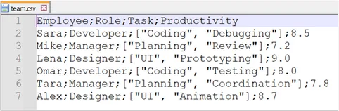

"Code Meets Cells": The Spreadsheet Metaphor in Softanza's stzTable
Data tables are essential for many programming tasks, from data storage to complex analyses. Softanza's stzTable class for the Haro programming language provides an intuitive and powerful way to work with tabular data.
What makes stzTable unique is its spreadsheet-like metaphor, offering an extensive API with naturally-named methods that follow how people think about tables. This allows for concise, precise, and flexible data manipulation with a human-readable interface.
par Mansour Ayouni · dans le dépôt depuis le 2025-05-06 · essai de fonction · domaine Tables et données
Cet article est écrit en anglais, comme la bibliothèque.
A Wise and Revered Sufi Scholar from Niger Exploring Computer Code in a Traditional Study Room.
Introduction
Creating Tables with stzTable
One of the first things you'll appreciate about stzTable is the variety of ways you can create a table. This flexibility means you can choose the method that best suits your data and your workflow. Let's explore each creation method with examples.
Creating an Empty Table
Sometimes, you just need a blank slate to start building your table. stzTable allows you to create an empty table with a single column and row, containing an empty cell.
o1 = new stzTable([]) o1.Show()
illustration
Output:
╭──────╮ │ Col1 │ ├──────┤ │ │ ╰──────╯
This creates a table with one column named "COL1" and one row with an empty string. It's a minimal starting point, perfect for dynamically building tables from scratch.
Creating a Table with Specified Dimensions
If you know in advance how many columns and rows you need, you can specify the dimensions directly.
o1 = new stzTable([3, 2]) o1.Show()
illustration
Output:
╭──────┬──────┬──────╮ │ Col1 │ Col2 │ Col3 │ ├──────┼──────┼──────┤ │ │ │ │ │ │ │ │ ╰──────┴──────┴──────╯
This creates a table with 3 columns (named "COL1", "COL2", "COL3") and 2 rows, each cell initialized to an empty string. This is handy when you have a fixed structure in mind.
Creating a Table from Lists of Lists
Perhaps the most intuitive way to create a table is by providing a list of lists, where the first list represents the column names and subsequent lists are the rows of data.
o1 = new stzTable([
[ :ID, :EMPLOYEE, :SALARY ],
[ 10, "Ali", 35000 ],
[ 20, "Dania", 28900 ],
[ 30, "Han", 25982 ],
[ 40, "Ali", 12870 ]
])
o1.Show()illustration
Output:
╭────┬──────────┬────────╮ │ Id │ Employee │ Salary │ ├────┼──────────┼────────┤ │ 10 │ Ali │ 35000 │ │ 20 │ Dania │ 28900 │ │ 30 │ Han │ 25982 │ │ 40 │ Ali │ 12870 │ ╰────┴──────────┴────────╯
This method is straightforward and mirrors how tables are often represented in code. If you omit the column names, stzTable will automatically generate them as :COL1, :COL2, etc.
Creating a Table from a Hash List
For those who prefer a dictionary-like structure, stzTable supports creation from a hash list where keys are column names and values are lists of data for each column.
o1 = new stzTable([
:NAME = [ "Ali", "Dania", "Han" ],
:JOB = [ "Programmer", "Manager", "Doctor" ],
:SALARY = [ 35000, 50000, 62500 ]
])
o1.Show()illustration
Output:
╭───────┬────────────┬────────╮ │ Name │ Job │ Salary │ ├───────┼────────────┼────────┤ │ Ali │ Programmer │ 35000 │ │ Dania │ Manager │ 50000 │ │ Han │ Doctor │ 62500 │ ╰───────┴────────────┴────────╯
This approach can be particularly valuable when your data is already organized by columns.
Importing and exporting CSV
In real-world applications, data often comes from external sources like CSV files. stzTable can load data directly from such files, making it easy to work with existing datasets.
o1 = new stzTable(:FromFile = "mytable.csv") o1.Show()
illustration
Output:
╭─────────┬──────────┬─────────┬───────────╮ │ Nation │ Language │ Capital │ Continent │ ├─────────┼──────────┼─────────┼───────────┤ │ Tunisia │ Arabic │ Tunis │ Africa │ │ France │ French │ Paris │ Europe │ │ Egypt │ English │ Cairo │ Africa │ │ Belgium │ French │ Brussel │ Europe │ │ Yemen │ Arabic │ Sanaa │ Asia │ ╰─────────┴──────────┴─────────┴───────────╯
This loads the table from a CSV string, automatically handling the column names and data rows. For simplicity, Softanza supports this standard ; separator based format:

To export the content of the table back in a CSV string, you just do:
? o1.ToCSV() #--> 'nation;language;capital;continent Tunisia;Arabic;Tunis;Africa France;French;Paris;Europe Egypt;English;Cairo;Africa Belgium;French;Brussel;Europe Yemen;Arabic;Sanaa;Asia'
Note:
stzTabledoes not deal directly with files. To read the content of a file named"mydata.csv", first load it into a string variable usingstr = read("mydata.csv"), then pass that string to thestzTableobject. Similarly, after exporting the content of astzTableobject to a CSV-formatted string, you can save it to a file usingwrite("mydata.csv", str).Or you can use the
stzCSVFileclass to do that in an object-oriented way.
Importing and Exporting JSON
The stzTable class enables seamless JSON import and export for integration with JSON-based data sources. The ToJson() method converts an stzTable into a compact JSON string, while FromJson() creates a table from a valid JSON string.
cJson = '{"product":["Apple","Orange","Banana"],"price":["$1.50","$1.20","$0.80"],"stock":["100","150","200"]}'
o1 = new stzTable([])
o1.FromJson(cJson)
o1.Show()illustration
Output:
╭─────────┬───────┬───────╮ │ Product │ Price │ Stock │ ├─────────┼───────┼───────┤ │ Apple │ $1.50 │ 100 │ │ Orange │ $1.20 │ 150 │ │ Banana │ $0.80 │ 200 │ ╰─────────┴───────┴───────╯
The ToJson() method generates a compact JSON string, preserving column names and data. For a formatted output with newlines and indentation, use ToJsonXT(). The IsJson() function, available via stzString (e.g., Q(cJson).IsJson()), validates JSON input before import. These methods facilitate working with APIs or JSON files, streamlining data integration into stzTable for further analysis.
aData = [
[ "product", [ "Apple", "Orange", "Banana" ] ],
[ "price", [ "$1.50", "$1.20", "$0.80" ] ],
[ "stock", [ "100", "150", "200" ] ]
]
o1 = new stzTable(aData)
? o1.ToJson()
#--> {"product":["Apple","Orange","Banana"],"price":["$1.50","$1.20","$0.80"],"stock":["100","150","200"]}
? o1.ToJsonXT()
'
{
"product": [
"Apple",
"Orange",
"Banana"
],
"price": [
"$1.50",
"$1.20",
"$0.80"
],
"stock": [
"100",
"150",
"200"
]
}
'
Importing and exporting HTML Tables
The stzTable class supports importing HTML tables, enabling integration of web-based data into Haro applications. Using stzString, you can verify HTML table markup and convert it into an stzTable object with the FromHtml() method, which extracts column headers from <thead> and data from <tbody>.
cHtmlStr = '
<table class="data" id="products">
<thead>
<tr>
<th scope="col">Product</th>
<th scope="col">Price</th>
<th scope="col">Stock</th>
</tr>
</thead>
<tbody>
<tr class="row">
<td>Apple</td>
<td>$1.50</td>
<td>100</td>
</tr>
<tr class="row">
<td>Orange</td>
<td>$1.20</td>
<td>150</td>
</tr>
<tr class="row">
<td>Banana</td>
<td>$0.80</td>
<td>200</td>
</tr>
<tr class="row">
<td>Grape</td>
<td>$2.00</td>
<td>80</td>
</tr>
<tr class="row">
<td>Mango</td>
<td>$3.00</td>
<td>50</td>
</tr>
</tbody>
</table>
'
? Q(cHtmlStr).IsHtmlTable()
#--> TRUE
o1 = new stzTable([])
o1.FromHtml(cHtmlStr)
o1.Show()illustration
Output:
╭─────────┬───────┬───────╮ │ Product │ Price │ Stock │ ├─────────┼───────┼───────┤ │ Apple │ $1.50 │ 100 │ │ Orange │ $1.20 │ 150 │ │ Banana │ $0.80 │ 200 │ │ Grape │ $2.00 │ 80 │ │ Mango │ $3.00 │ 50 │ ╰─────────┴───────┴───────╯
The IsHtmlTable() method validates the HTML table, and FromHtml() creates an stzTable object, ready for further manipulation and analysis, ideal for web-scraped data or HTML reports.
In a similar fashion, stzTable is capable of exporting its content to HTML with ease:
aData = [
[
"product",
[ "Apple", "Orange", "Banana" ]
],
[
"price",
[ "$1.50", "$1.20", "$0.80" ]
],
[
"stock",
[ "100", "150", "200" ]
]
]
o1 = new stzTable(aData)
? o1.ToHtmlXT() # Without XT you get a compact versio of the html string
#-->
'
<table class="data" id="products">
<thead>
<tr>
<th scope="col">product</th>
<th scope="col">price</th>
<th scope="col">stock</th>
</tr>
</thead>
<tbody>
<tr class="row">
<td>Apple</td>
<td>$1.50</td>
<td>100</td>
</tr>
<tr class="row">
<td>Orange</td>
<td>$1.20</td>
<td>150</td>
</tr>
<tr class="row">
<td>Banana</td>
<td>$0.80</td>
<td>200</td>
</tr>
</tbody>
</table>
'
Navigating and Querying Data
stzTable truly shines in its implementation of the spreadsheet metaphor, providing an intuitive way to navigate and manipulate your data. This section explores the comprehensive and thoughtfully designed API for accessing and inspecting your data.
Columns and Rows Navigation
stzTable offers a rich set of methods for working with columns and rows, making it easy to navigate your data structure:
o1 = new stzTable([ [ :ID, :EMPLOYEE, :SALARY ], #-------------------------------# [ 10, "Ali", 35000 ], [ 20, "Dania", 28900 ], [ 30, "Han", 25982 ], [ 40, "Ali", 12870 ] ]) # Getting basic information ? o1.NumberOfColumns() #--> 3 ? o1.NumberOfRows() #--> 4 ? o1.Columns() #--> :[ "id", "employee", "salary" ] ? o1.Rows() #--> ' [ [ 10, "Ali", 35000 ], [ 20, "Dania", 28900 ], [ 30, "Han", 25982 ], [ 40, "Ali", 12870 ] ] ' # Checking for specific columns ? o1.HasColumn(:EMPLOYEE) #--> TRUE ? o1.HasColumns([:ID, :SALARY]) #--> TRUE # Finding columns and rows ? o1.FindColumnByName(:SALARY) # Or simply FindCol(:SALARY) #--> [ 3 ] ? o1.FindRowByValue([ 30, "Han", 25982 ]) # Or simply FindRow(...) #--> [ 3 ]
illustration
Cell Access and Navigation
stzTable provides powerful and flexible ways to access individual cells or groups of cells:
# Continuing with the same o1 object and getting it displayed
o1.Show()
#-->
'
╭────┬──────────┬────────╮
│ Id │ Employee │ Salary │
├────┼──────────┼────────┤
│ 10 │ Ali │ 35000 │
│ 20 │ Dania │ 28900 │
│ 30 │ Han │ 25982 │
│ 40 │ Ali │ 12870 │
╰────┴──────────┴────────╯
'
# Accessing individual cells
? o1.Cell(:SALARY, 2) // Gets the value in the SALARY column, row 2
#--> 28900
? o1.CellZ(:EMPLOYEE, 3) // or CellAndPosition() ~> Gets both value and position
#--> [ "Han", [2, 3] ]
# Getting a section or range of cells
? o1.Section([:ID, 1], [:EMPLOYEE, 2]) # Gets a rectangular section of cells
#--> [ 10, "Ali", 20, "Dania" ]
? o1.Range(:SALARY, 1, 3) # Gets a range of cells in a column
#--> [ 35000, 28900, 25982 ]
# Getting all cells in a column or row
? o1.Col(:EMPLOYEE)
#--> [ "Ali", "Dania", "Han", "Ali" ]
? o1.Row(2)
#--> [ 20, "Dania", 28900 ]illustration
Note: In the example above, if you need to get the cells of the column
:EMPLOYEEwithout duplication of the string"Ali", then use theU()small function like this:U( o1.Col(:EMPLOYEE) )to get just[ "Ali", "Dania", "Han" ].
Smart Position Handling
A unique feature of stzTable is its flexible handling of positions and ranges:
# Let's recall our o1 table object and display it o1.Show() #--> ' ╭────┬──────────┬────────╮ │ Id │ Employee │ Salary │ ├────┼──────────┼────────┤ │ 10 │ Ali │ 35000 │ │ 20 │ Dania │ 28900 │ │ 30 │ Han │ 25982 │ │ 40 │ Ali │ 12870 │ ╰────┴──────────┴────────╯ ' # First, last, and specific positions ? o1.FirstColName() // Returns the name of the first column #--> "id" ? o1.LastCol() // Returns the cells in the last column #--> [ 35000, 28900, 25982, 12870 ] ? o1.LastColXT() // Returns the last column name and its cells #--> [ "salary", [ 35000, 28900, 25982, 12870 ] ] ? o1.NthCol(2) // Returns the nth column cells #--> #--> [ "Ali", "Dania", "Han", "Ali" ] // Getting specific cells positions in a column or row ? o1.FindCellsInCol(:SALARY) // or CellsPositionsInColumn(:SALARY) #--> [ [3, 1], [3, 2], [3, 3], [3, 4] ] ? o1.FindCellsInRow(2) #--> [ [ 1, 2], [2, 2], [3, 2]
illustration
Finding Cells Throughout the Table
stzTable offers a multitude of methods for finding cells based on their values:
# Again, we show our o1 object content
o1.Show()
#-->
'
╭────┬──────────┬────────╮
│ Id │ Employee │ Salary │
├────┼──────────┼────────┤
│ 10 │ Ali │ 35000 │
│ 20 │ Dania │ 28900 │
│ 30 │ Han │ 25982 │
│ 40 │ Ali │ 12870 │
╰────┴──────────┴────────╯
'
# Finding cells by value
? o1.Find("Ali") // Finds all positions where "Ali" appears
#--> [ [2, 1], [2, 4] ]
? o1.FindMany(["Ali", 35000]) // Finds multiple values
#--> [ [2, 1], [3, 1], [2, 4 ] ]
? o1.FindAllExcept(["Ali", "Dania"]) // Finds all cells except specified values
#--> [ [1, 1], [ 3,1], [1, 2], [3, 2], [1, 3], [2, 3], [3, 3], [1, 4], [3, 4] ]
# Finding by occurrence
? o1.FindNth("Ali", 2) // Finds the 2nd occurrence of "Ali"
#--> [ 2, 4 ]
? o1.FindFirst(35000) // Finds the first occurrence of 35000
#--> [ 3, 1 ]
? o1.FindLast("Dania") // Finds the last occurrence of "Dania", which is also the only and first!
#--> [ 2, 2 ]
# Counting occurrences using thre alternatives
? o1.NumberOfOccurrence("Ali") // Counts occurrences of "Ali"
#--> 2
? Count("Dania")
#--> 1
? HowMany("Mansour")
#--> 0illustration
Finding Subvalues Inside Cells
A notable feature is the ability to search for partial matches within cells:
o1 = new stzTable([
[ :ID, :EMPLOYEE, :SALARY ],
[ 10, "Ali", 35000 ],
[ 20, "Dania", 28900 ],
[ 30, "Ben", 25982 ],
[ 40, "ali", "Ali" ]
])
? o1.Contains( :Cell = "Ali" ) # same as ? o1.ContainsCell("Ali")
#--> TRUE
? o1.Contains( :SubValue = "a" ) # same as ? o1.ContainsSubValue("a")
#--> TRUE
# Using case sensitivity in the search
? @@( o1.FindCellCS("Ali", FALSE) )
#--> [ [ 2, 1 ], [ 2, 4 ], [ 3, 4 ] ]
#--> One occurrence of "Ali" in the cell [2, 1]
? @@NL( o1.FindSubValueCS("a", :CaseSensitive = FALSE) )
#--> [
# [ [ 2, 1 ], [ 1 ] ],
# [ [ 2, 2 ], [ 2, 5 ] ],
# [ [ 2, 4 ], [ 1 ] ],
# [ [ 3, 4 ], [ 1 ] ]
# ]
#--> 5 occurrences of "a" (or "A"):
# - 1 occurrence in cell [2, 1] ("Ali"), in position 1,
# - 2 occurrences in cell [2, 2] ("Dania"), in positions 2 and 5
# - 1 occurrence in cell [2, 4] ("ali"), in position 1, and finally
# - 1 occurrence in cell [3, 4], ("Ali"), also in position 1illustration
This subvalue search capability is exceptionally useful for text analysis and data exploration tasks, especially when working with free-form text fields.
Note: In Softanza, case sensitivity is consistently supported across all library classes and functions—not just in string-related classes like
stzString.
Targeted Searching
stzTable takes searching to another level by allowing you to target specific columns, rows, or cell sections:
# Searching within columns (note how CS, for CaseSensitive, is FALSE) ? o1.FindInColCS(:EMPLOYEE, "Ali", FALSE) // Finds "Ali" in the EMPLOYEE column in whatever case #-- [ [2, 1], [ 2, 4 ] ] ? o1.FindSubValueInColCS(:EMPLOYYE, "A", FALSE) // Finds cells containing "A" or "a" in that column #--> [ # [ [2, 1], [1] ], // 1st char in "Ali" in cell [2, 1] # [ [2, 2], [2, 5] ], // 2nd and 5th chars in "Dania" in cell [2, 2] # [ [2, 4], [1] ] // 1st char in "ali" (because CS = FALSE) in cell [2, 4] # ] # Searching within rows ? o1.FindInRowCS(4, "ALI") // Finds "ALI" (in whatever case it is written) in row 4 #--> [ [2, 4], [3, 4] ] ? o1.FindSubValueInRow(4, "li") // Finds cells containing "li" in row 4 #--> [ # [ [2, 4], 2 ], // "li" starts at position 2 in "ali" in cell [2, 4] # [ [3, 4], 2 ] // "li" starts at position 2 in "Ali" in cell [3, 4] # ] # Searching "Ali" (in whatever case it is written) in a specific section ? o1.FindInSectionCS([:ID, 1], [:SALARY, 3], "ali", FALSE) #--> [ [2, 1], [2, 4], [3, 4] ] # Finding a cell relative to other cells ? o1.FindNthInColCS(:EMPLOYEE, "Ali", 2, FALSE) // Finds the 2nd "Ali" in EMPLOYEE column #--> [ [2, 1], [2, 4] ] ? o1.FindFirstInRow(3, "Ben") // Finds the first occurrence of "Ben" in row 3 #--> [ 2, 3 ] # Checking containement ? o1.ColContains(:SALARY, 35000) // Checks if SALARY column contains 35000 #--> TRUE ? o1.RowContains(2, "Dania") // Checks if row 2 contains "Dania" #--> TRUE
illustration
The intuitive naming scheme embraced clearly distinguishes between searching for exact values — Find(val), which locates entire cells equal to val — and partial matches — FindInCells(subval), which finds any occurrence of subval within the content of the cells.
Filtering Data
The stzTable class provides powerful filtering capabilities that let you extract specific subsets of data based on one or more conditions. This is similar to applying filters in spreadsheet applications, but with programmatic flexibility.
Filtering by One Column
The FilterBy() method permanently updates the table content to show only data that matches your specified criteria. If you want to preserve the original table while viewing filtered results, you can use the FilterByCQ() method ("C" stands for "Copy" and "Q" is used in Softanza to return an object for futrther processing), which returns a new filtered table without modifying the original.
# Filter by a single condition, modifying the original table o1.FilterBy([ :Region = "North" ]) o1.Show()
illustration
Output:
╭────────┬───────────┬─────────┬───────┬───────╮ │ Region │ Product │ Quarter │ Sales │ Units │ ├────────┼───────────┼─────────┼───────┼───────┤ │ North │ Product A │ Q1 │ 10000 │ 100 │ │ North │ Product B │ Q2 │ 8000 │ 80 │ ╰────────┴───────────┴─────────┴───────┴───────╯
# Filter by a single condition, returning a new table without modifying the original o1.FilterByCQ([ :Region = "North", :Quarter = "Q2" ]).Show()
illustration
Output:
╭────────┬───────────┬─────────┬───────┬───────╮ │ Region │ Product │ Quarter │ Sales │ Units │ ├────────┼───────────┼─────────┼───────┼───────┤ │ North │ Product B │ Q2 │ 8000 │ 80 │ ╰────────┴───────────┴─────────┴───────┴───────╯
The filtering criteria use an intuitive syntax where you specify column names and their expected values in a list. This human-readable approach makes your code more maintainable and easier to understand.
Filtering by Multiple Columns
You can combine multiple conditions in a single filter operation, creating more complex queries:
# Filter with multiple columns as criteria
o1.FilterByCQ([
:Region = "East",
:Quarter = "Q1"
]).Show()illustration
Output:
╭────────┬───────────┬─────────┬───────┬───────╮ │ Region │ Product │ Quarter │ Sales │ Units │ ├────────┼───────────┼─────────┼───────┼───────┤ │ East │ Product A │ Q1 │ 11000 │ 110 │ │ East │ Product B │ Q1 │ 7500 │ 75 │ ╰────────┴───────────┴─────────┴───────┴───────╯
For even more flexibility, you can specify multiple acceptable values for a single column:
# Filter with multiple possible values for a column
o1.FilterByCQ([
:Region = [ "East", "West" ],
:Product = "Product A"
]).Show()illustration
Output:
╭────────┬───────────┬─────────┬───────┬───────╮ │ Region │ Product │ Quarter │ Sales │ Units │ ├────────┼───────────┼─────────┼───────┼───────┤ │ East │ Product A │ Q1 │ 11000 │ 110 │ │ West │ Product A │ Q1 │ 13000 │ 130 │ ╰────────┴───────────┴─────────┴───────┴───────╯
This multi-value support lets you create sophisticated filtering criteria without having to chain multiple filter operations, making your code cleaner and more efficient.
Conditional Filtering
The stzTable class allows you to define conditions using a string that contains plain Haro code. To see this in action, let’s take a table o1 with two columns: Productivity and Hours. After displaying the full dataset, we apply filters to extract the rows that meet specific criteria.
o1 = new stzTable([
[ :Productivity, :Hours ],
[ 10, 5 ],
[ 7, 3 ],
[ 9, 4 ]
])
o1.Show()illustration
Output:
╭──────────────┬───────╮ │ Productivity │ Hours │ ├──────────────┼───────┤ │ 10 │ 5 │ │ 7 │ 3 │ │ 9 │ 4 │ ╰──────────────┴───────╯
First, we filter for rows where Productivity is greater than 8:
o1.FilterWQ('@(:Productivity) > 8').Show()illustration
This returns only the rows with Productivity values of 10 and 9.
╭──────────────┬───────╮ │ Productivity │ Hours │ ├──────────────┼───────┤ │ 10 │ 5 │ │ 9 │ 4 │ ╰──────────────┴───────╯
illustration
Then, we add a second condition: only include rows where Hours is also greater than or equal to 5:
o1.FilterWQ('@(:Productivity) > 8 and @(:Hours) >= 5').Show()illustration
Now, only one row remains—where Productivity is 10 and Hours is 5.
╭──────────────┬───────╮ │ Productivity │ Hours │ ├──────────────┼───────┤ │ 10 │ 5 │ ╰──────────────┴───────╯
illustration
This demonstrates how complex conditions can be expressed in a clear and concise way using the FilterW() method.
Manipulating and Restructuring Data
Along with navigation and search, stzTable truly excels in data manipulation. Its rich set of methods allows you to transform your table in virtually any way imaginable.
Replacing Data
stzTable offers numerous ways to replace data, from individual cells to entire sections:
# Replacing individual cells
o1.ReplaceCell(:SALARY, 2, 30000) // Replaces a single cell value
o1.ReplaceCells([[:SALARY, 2], [:SALARY, 3]], 30000) // Replaces multiple cells with the same value
o1.ReplaceCellsXT([[:SALARY, 2], [:SALARY, 3]], [30000, 31000]) // Replaces multiple cells with different values
# Replacing based on value
o1.ReplaceCellValue("Ali", "Alexander") // Replaces all occurrences of "Ali" with "Alexander"
o1.ReplaceNthCellValue("Ali", "Alexander", 2) // Replaces the 2nd occurrence of "Ali"
# Replacing columns and rows
o1.ReplaceColumn(:SALARY, [40000, 35000, 42000, 38000]) // Replaces an entire column
o1.ReplaceRow(2, [20, "Daniel", 32000]) // Replaces an entire rowillustration
It's possible to replace subvalues by adding the In to any of the methods above. For example:
o1.ReplaceInCol(:EMPLOYEE, "a", "A") // Replace all the lowercase "a"s in the EMPLOYEE column by an uppercase "A"
illustration
Adding and Removing Data
stzTable makes it simple to modify your table structure by adding or removing elements:
# Adding columns and rows o1.AddCol(:DEPARTMENT, ["Sales", "IT", "HR", "Marketing"]) // Adds a new column o1.AddRow([50, "NewGuy", 30000, "Finance"]) // Adds a new row # Removing columns and rows o1.RemoveCol(:SALARY) // Removes the SALARY column o1.RemoveRow(3) // Removes row 3 o1.RemoveColsExcept([:ID, :EMPLOYEE]) // Keeps only specified columns o1.RemoveRowsExcept([1, 2]) // Keeps only specified rows
illustration
Restructuring Your Table
stzTable provides powerful methods for restructuring your table:
# Moving elements o1.MoveRow(2, 4) // Moves row 2 to position 4 o1.MoveColumn(:ID, 3) // Moves the ID column to position 3 # Swapping elements o1.SwapRows(1, 3) // Swaps rows 1 and 3 o1.SwapColumns(:ID, :SALARY) // Swaps the ID and SALARY columns # Renaming columns o1.RenameColumn(:EMPLOYEE, :NAME) // Renames the EMPLOYEE column to NAME
illustration
Transposing Tables
The stzTable class offers a flexible Transpose() method to swap rows and columns, enabling you to reorient your data for analysis or presentation. This is particularly useful when you need to change the perspective of your dataset, such as switching between row-based and column-based views.
o1 = new stzTable([ [ :ID, :AGE, :SALARY ], #----------------------------------# [ 10, 32, 35000 ], [ 20, 27, 28900 ], [ 30, 24, 25982 ], [ 40, 22, 12870 ] ]) o1.Show() #--> ' ╭────┬─────┬────────╮ │ Id │ Age │ Salary │ ├────┼─────┼────────┤ │ 10 │ 32 │ 35000 │ │ 20 │ 27 │ 28900 │ │ 30 │ 24 │ 25982 │ │ 40 │ 22 │ 12870 │ ╰────┴─────┴────────╯ ' o1.Transpose() o1.Show() #--> ' ╭────────┬───────┬───────┬───────┬───────╮ │ Col1 │ Col2 │ Col3 │ Col4 │ Col5 │ ├────────┼───────┼───────┼───────┼───────┤ │ id │ 10 │ 20 │ 30 │ 40 │ │ age │ 32 │ 27 │ 24 │ 22 │ │ salary │ 35000 │ 28900 │ 25982 │ 12870 │ ╰────────┴───────┴───────┴───────┴───────╯ ' o1.TransposeBack() o1.Show() #--> ' ╭────┬─────┬────────╮ │ Id │ Age │ Salary │ ├────┼─────┼────────┤ │ 10 │ 32 │ 35000 │ │ 20 │ 27 │ 28900 │ │ 30 │ 24 │ 25982 │ │ 40 │ 22 │ 12870 │ ╰────┴─────┴────────╯ '
illustration
For cases where you want to include the original column names in the transposition, the TransposeXT() method extends this functionality by incorporating the column names as part of the transposed data. This ensures that the table's metadata remains intact, making it ideal for scenarios where preserving column context is crucial for reporting or further processing. The TransposeBack() method allows you to revert to the original table structure, providing flexibility to experiment with different data orientations without losing the initial configuration.
Advanced Manipulation
stzTable goes beyond basic operations with advanced manipulation capabilities:
# Inserting at specific positions
o1.InsertColumn(:DEPARTMENT, ["Sales", "IT", "HR", "Marketing"], :At = 2) // Inserts a column at position 2
o1.InsertRow([50, "NewGuy", 30000, "Finance"], :At = 3) // Inserts a row at position 3
# Erasing (clearing) data without removing structure
o1.EraseColumn(:NOTES) // Clears all values in the NOTES column
o1.EraseRow(4) // Clears all values in row 4
o1.EraseSection([:ID, 2], [:SALARY, 4]) // Clears a section of the table
# Filling with values
o1.Fill("N/A") // Fills the entire table with "N/A"illustration
The distinction between removing (which changes the table structure) and erasing (which keeps the structure but clears values) highlights the thoughtful design of the API.
Creating Subtables
stzTable makes it easy to extract portions of your data as new tables:
o1 = new stzTable([ [ :ID, :EMPLOYEE, :SALARY, :JOB ], [ 10, "Ali", 35000, "job1" ], [ 20, "Dan", 28900, "job2" ], [ 30, "Ben", 25982, "job3" ] ]) o1.Show() #--> ' ╭────┬──────────┬────────┬──────╮ │ Id │ Employee │ Salary │ Job │ ├────┼──────────┼────────┼──────┤ │ 10 │ Ali │ 35000 │ job1 │ │ 20 │ Dan │ 28900 │ job2 │ │ 30 │ Ben │ 25982 │ job3 │ ╰────┴──────────┴────────┴──────╯ ' # Getting the content of the subtable ? @@NL( o1.SubTable([ :EMPLOYEE, :SALARY ]) ) + NL #--> [ # [ "employee", [ "Ali", "Dan", "Ben" ] ], # [ "salary" , [ 35000, 28900, 25982 ] ] # ] # Casting the subtable into a stzTable object and showing it o1.SubTableQRT([ :EMPLOYEE, :SALARY ], :stzTable).Show() #--> ' ╭──────────┬────────╮ │ Employee │ Salary │ ├──────────┼────────┤ │ Ali │ 35000 │ │ Dan │ 28900 │ │ Ben │ 25982 │ ╰────────┴────────╯ '
illustration
This capability is invaluable for isolating specific subsets of your data, returning them as stzTable objects ready for further analysis or presentation.
Conditional Methods
stzTable includes a powerful "Conditional Method" system that adds a W() suffix to existing methods, enabling conditional filtering:
# Get all cells in the SALARY column where value is > 30000
? o1.CellsW('ToNumber(@Cell) > 30000')
# Find employees with names shorter than 5 characters
? o1.FindInColW(:EMPLOYEE, 'isString(@Cell) and len(@Cell) < 5')
# Replace only numeric cells in a column
o1.ReplaceCellsInColW(:ID, 'isNumber(@Cell)', "ID-" + @Cell)illustration
Spreadsheet-Like Calculations and Sorting
What sets stzTable apart from many other table implementations is its incorporation of spreadsheet-like functionality, allowing for calculations, sorting, and other advanced operations directly within your code.
Calculated Columns and Rows
One of stzTable's most powerful features is the ability to add calculated columns and rows:
o1 = new stzTable([ [ "COUNTRY", "INCOME", "POPULATION" ], #------------------------------------# [ "USA", 25450, 340.1 ], [ "China", 18150, 1430.1 ], [ "Japan", 5310, 123^.2 ], [ "Germany", 4490, 83.3 ], [ "India", 3370, 1430.2 ] ]) # Adding a calculated row (at the end of the table) o1.AddCalculatedCol(:PERCAPITA, '@(:INCOME) / @(:POPULATION)') o1.Show() #--> ' ╭─────────┬────────┬────────────┬───────────╮ │ Country │ Income │ Population │ Percapita │ ├─────────┼────────┼────────────┼───────────┤ │ USA │ 25450 │ 340.10 │ 74.83 │ │ China │ 18150 │ 1430.10 │ 12.69 │ │ Japan │ 5310 │ 123.20 │ 43.10 │ │ Germany │ 4490 │ 83.30 │ 53.90 │ │ India │ 3370 │ 1430.20 │ 2.36 │ ╰─────────┴────────┴────────────┴───────────╯ ' # Inserting a calculated column at position 2 (using the `stzCountry` class and its `CurrencyAbbreviation()` method) o1.InsertCalculatedCol(2, :CURRENCY, 'StzCountryQ(@(:COUNTRY)).CurrencyAbbreviation()') ? o1.Show() #--> ' ╭─────────┬──────────┬────────┬────────────┬───────────╮ │ Country │ Currency │ Income │ Population │ Percapita │ ├─────────┼──────────┼────────┼────────────┼───────────┤ │ USA │ USD │ 25450 │ 340.10 │ 74.83 │ │ China │ CNY │ 18150 │ 1430.10 │ 12.69 │ │ Japan │ JPY │ 5310 │ 123.20 │ 43.10 │ │ Germany │ EUR │ 4490 │ 83.30 │ 53.90 │ │ India │ INR │ 3370 │ 1430.20 │ 2.36 │ ╰─────────┴──────────┴────────┴────────────┴───────────╯ '
illustration
After adding calculated columns you can find them easily:
? @@( o1.FindCalculatedCols() ) + NL #--> [ 2, 4 ] ? o1.CalculatedColNames() #--> [ "currency", "population" ] ? @@NL( o1.CalculatedCols() ) + NL #--> [ # [ "USD", "CNY", "JPY", "EUR", "INR" ], # [ 340.10, 1430.10, 123.20, 83.30, 1430.20 ] # ]
illustration
The same thing can be done with calculated rows:
# Adding a calculated row (at the end of the table) o1.AddCalculatedRow([ '', '', '@Sum( @(:INCOME) )', '@Sum( @(:POPULATION) )', '@Average( @(:PERCAPITA) )' ]) ? o1.Show() #--> ' ╭─────────┬──────────┬────────┬────────────┬───────────╮ │ Country │ Currency │ Income │ Population │ Percapita │ ├─────────┼──────────┼────────┼────────────┼───────────┤ │ USA │ USD │ 25450 │ 340.10 │ 74.83 │ │ China │ CNY │ 18150 │ 1430.10 │ 12.69 │ │ Japan │ JPY │ 5310 │ 123.20 │ 43.10 │ │ Germany │ EUR │ 4490 │ 83.30 │ 53.90 │ │ India │ INR │ 3370 │ 1430.20 │ 2.36 │ │ │ │ 56770 │ 3406.90 │ 37.38 │ ~> Here is the row we added ╰─────────┴──────────┴────────┴────────────┴───────────╯ ' ? @@( o1.FindCalculatedRows() ) + NL #--> [ 6 ] ? @@( o1.CalculatedRows() ) + NL #--> [ [ " ", " ", 56770, 3406.90, 37.38 ] ]
illustration
Note: There is a better way to display the table along with its total at the bottom—by using the
showXT()function, as demonstrated later in the article.
Excel-Like Functions
stzTable implements many familiar spreadsheet functions for performing calculations on ranges of cells.
o1 = new stzTable([ [ "A", "B", "C" ], [ 12, 10, 8 ], [ 10, 14, 24 ], [ 7, 4, 8 ] ]) ? o1.KOUNT([ :A, 1 ], [ :C, 3 ]) # We use "K" because we have an other Count() method alternative of len() #--> 9 ? o1.SUM([ :A, 1 ], [ :C, 3 ]) #--> 97 ? o1.AVERAGE([ :A, 1 ], [ :C, 3 ]) #--> 10.78 ? o1.PRODUCT([ :A, 1 ], [ :C, 3 ]) #--> 722_534_400 ? o1.MAX([ :A, 1 ], [ :C, 3 ]) #--> 24 ? o1.MIN([ :A, 1 ], [ :C, 3 ]) #--> 4
illustration
Note : More functions are planned for future updates, aiming to deliver a fully Excel-like experience inside your Haro code.
Sorting Capabilities
stzTable provides comprehensive sorting options for organizing your data:
// Basic sorting o1.Sort() // Sorts the entire table in ascending order o1.SortDown() // Sorts in descending order // Sorting on specific columns o1.SortOn(:SALARY) // Sorts the table based on the SALARY column o1.SortOnDown(:SALARY) // Sorts in descending order based on SALARY
illustration
It also supports an advanced expression-based sorting on a given column using SortOnBy() method, both in acending and descending orders:
o1 = new stzTable([ [ :ID, :NAME, :AGE ], #-------------------------------# [ 10, "Abdelkarim", 52 ], [ 20, "Hatem", 46 ], [ 30, "Abraham", 48 ] ]) o1.SortOnBy(:NAME, 'len(@cell)') o1.Show() #--> ' ╭────┬────────────┬─────╮ │ Id │ Name │ Age │ ├────┼────────────┼─────┤ │ 20 │ Hatem │ 46 │ │ 30 │ Abraham │ 48 │ │ 10 │ Abdelkarim │ 52 │ ╰────┴────────────┴─────╯ ' o1.SortOnByDown(:NAME, 'len(@cell)') o1.Show() #--> ' ╭────┬────────────┬─────╮ │ Id │ Name │ Age │ ├────┼────────────┼─────┤ │ 10 │ Abdelkarim │ 52 │ │ 30 │ Abraham │ 48 │ │ 20 │ Hatem │ 46 │ ╰────┴────────────┴─────╯ '
illustration
Grouping and Aggregating Data
Grouping is a powerful technique for summarizing and analyzing data by categories. The stzTable class makes this process straightforward with its GroupBy() method.
Single Column Grouping
You can group your data by a single column to organize related information:
# Group by Region o1.GroupBy([ :Region ]) o1.Show()
illustration
Output:
╭────────┬───────────┬─────────┬───────┬───────╮ │ Region │ Product │ Quarter │ Sales │ Units │ ├────────┼───────────┼─────────┼───────┼───────┤ │ North │ Product A │ Q1 │ 10000 │ 100 │ │ South │ Product A │ Q1 │ 15000 │ 150 │ │ East │ Product A │ Q1 │ 11000 │ 110 │ │ West │ Product A │ Q1 │ 13000 │ 130 │ ╰────────┴───────────┴─────────┴───────┴───────╯
This transforms your table to show unique values in the specified column, with the first occurrence of each value displayed in the result.
Multi-Column Grouping with Aggregations
For more advanced analysis, you can group by multiple columns and simultaneously apply aggregation functions to numeric columns using the extended form GroupByXT(aCols, aAggregations), as shown below:
# Group by Product and Region with aggregations o1.GroupByXT([ :Product, :Region ], [ :Sales = 'Sum', :Units = 'Average' ]) o1.Show()
illustration
Output:
╭────────┬───────────┬────────┬───────────┬─────────┬───────┬───────╮ │ Region │ Product │ Region │ Product │ Quarter │ Sales │ Units │ ├────────┼───────────┼────────┼───────────┼─────────┼───────┼───────┤ │ North │ Product A │ North │ Product A │ Q1 │ 10000 │ 100 │ │ South │ Product A │ South │ Product A │ Q1 │ 15000 │ 150 │ │ East │ Product A │ East │ Product A │ Q1 │ 11000 │ 110 │ │ West │ Product A │ West │ Product A │ Q1 │ 13000 │ 130 │ │ North │ Product B │ North │ Product B │ Q2 │ 8000 │ 80 │ │ South │ Product B │ South │ Product B │ Q1 │ 9500 │ 95 │ │ East │ Product B │ East │ Product B │ Q2 │ 7500 │ 75 │ │ West │ Product B │ West │ Product B │ Q1 │ 9000 │ 90 │ ╰────────┴───────────┴────────┴───────────┴─────────┴───────┴───────╯
This creates a hierarchical grouping with the primary column (Product) and secondary column (Region), while calculating the sum of Sales and the average of Units for each group.
Enhanced Visualization with Row Numbers and Subtotals
The ShowXT() method with the :SubTotal and :GrandTotal parameters provides a more comprehensive view of your grouped data:
o1.ShowXT([ :RowNumber = TRUE, :SubTotal = TRUE, :GrandTotal = TRUE ])
illustration
Output:
╭─────────────────────┬────────┬────────────┬────────────╮ │ # │ Product │ Region │ Sum(sales) │ Sum(units) │ ├─────────────────────┼────────┼────────────┼────────────┤ │ 1 │ Product A │ North │ 10000 │ 100 │ │ 2 │ Product A │ South │ 15000 │ 150 │ │ 3 │ Product A │ East │ 11000 │ 110 │ │ 4 │ Product A │ West │ 13000 │ 130 │ │ ------------------- │ ------ │ ---------- │ ---------- │ │ Sub-total │ │ 49000 │ 490 │ │ │ │ │ │ │ 5 │ Product B │ North │ 8000 │ 80 │ │ 6 │ Product B │ South │ 9500 │ 95 │ │ 7 │ Product B │ East │ 7500 │ 75 │ │ 8 │ Product B │ West │ 9000 │ 90 │ │ ------------------- │ ------ │ ---------- │ ---------- │ │ Sub-total │ │ 34000 │ 340 │ ├─────────────────────┼────────┼────────────┼────────────┤ │ GRAND-TOTAL │ │ 83000 │ 830 │ ╰─────────────────────┴────────┴────────────┴────────────╯
This displays shows raws numbers, intermediate subtotals for each primary group and a grand total at the bottom, making it easier to analyze hierarchical data relationships.
Grouping on List-Valued Columns
A powerful feature of stzTable is its built-in support for grouping by values inside list-based cells. In many real-world datasets, a single cell might contain multiple tags, roles, or labels—for example, a user’s skills, a product’s categories, or a task list. Rather than forcing you to pre-normalize your data, stzTable handles the heavy lifting automatically.
Suppose you have a CSV file (team.csv) that looks like this:

Load it into an stzTable and inspect:
o1 = new stzTable(:FromFile = "team.csv") o1.ShowXT([ :RowNumber = TRUE ])
illustration
Output:
╭───┬─────────────────┬───────────┬────────────────────────────────┬──────────────╮ │ # │ Employee │ Role │ Task │ Productivity │ ├───┼─────────────────┼───────────┼────────────────────────────────┼──────────────┤ │ 1 │ Sara │ Developer │ [ "Coding", "Debugging" ] │ 8.50 │ │ 2 │ Mike │ Manager │ [ "Planning", "Review" ] │ 7.20 │ │ 3 │ Lena │ Designer │ [ "UI", "Prototyping" ] │ 9 │ │ 4 │ Omar │ Developer │ [ "Coding", "Testing" ] │ 8 │ │ 5 │ Tara │ Manager │ [ "Planning", "Coordination" ] │ 7.80 │ │ 6 │ Alex │ Designer │ [ "UI", "Animation" ] │ 8.70 │ ╰───┴─────────────────┴───────────┴────────────────────────────────┴──────────────╯
illustration
Now, if you call GroupBy(:Task):
o1.GroupBy(:Task) o1.Show()
illustration
stzTable will explode the list in each cell of the Task column, and treat each individual entry as its own group:
╭──────────────┬──────────┬───────────┬──────────────╮ │ Task │ Employee │ Role │ Productivity │ ├──────────────┼──────────┼───────────┼──────────────┤ │ Coding │ Sara │ Developer │ 8.50 │ │ Coding │ Omar │ Developer │ 8 │ │ Debugging │ Sara │ Developer │ 8.50 │ │ Planning │ Mike │ Manager │ 7.20 │ │ Planning │ Tara │ Manager │ 7.80 │ │ Review │ Mike │ Manager │ 7.20 │ │ UI │ Lena │ Designer │ 9 │ │ UI │ Alex │ Designer │ 8.70 │ │ Prototyping │ Lena │ Designer │ 9 │ │ Testing │ Omar │ Developer │ 8 │ │ Coordination │ Tara │ Manager │ 7.80 │ │ Animation │ Alex │ Designer │ 8.70 │ ╰──────────────┴──────────┴───────────┴──────────────╯
illustration
This automatic “explode-and-group” behavior makes stzTable ideal for:
- Tag-based analyses (e.g., keywords, categories)
- Multi-skill or multi-role team reports
- Keyword or label frequency counts
Simply specify any column that holds lists of values—GroupBy() does the rest.
Aggregating Data
Aggregation functions allow you to perform calculations across rows to derive meaningful insights from your data. The stzTable class offers a variety of aggregation methods that work seamlessly with its other features.
Basic Aggregation
The simplest form of aggregation calculates a single metric across all rows:
# Calculate the sum of Sales o1.Aggregate([ :Sales = 'SUM' ]) o1.Show()
illustration
Output:
╭────────────╮ │ Sum(sales) │ ├────────────┤ │ 83000 │ ╰────────────╯
This reduces your entire table to a single value—the total sales across all records.
Multiple Aggregations
You can apply different aggregation functions to multiple columns simultaneously:
# Apply multiple aggregation functions
o1.Aggregate([
:Sales = 'SUM',
:Units = 'AVERAGE',
:Product = 'COUNT'
])
o1.Show()illustration
Output:
╭────────────┬────────────────┬────────────────╮ │ Sum(sales) │ Average(units) │ Count(product) │ ├────────────┼────────────────┼────────────────┤ │ 83000 │ 103.75 │ 8 │ ╰────────────┴────────────────┴────────────────╯
This creates a concise summary table showing the total sales, average units, and count of products—all in a single operation.
Combined Grouping and Aggregation
The true power of stzTable becomes evident when combining grouping and aggregation, using the GroupByXT(aColsToBeGroupped, aColsToBeAggregated) function:
# Group by Region with sum aggregation oCopy.GroupByXT([ :Region ], [ :Sales = 'Sum', :Units = 'Sum' ]) # Or GroupByAndAggregate() if you prefer oCopy.Show()
illustration
Output:
╭────────┬────────────┬───────────╮ │ Region │ Sum(Sales) │ Sum(Units)│ ├────────┼────────────┼───────────┤ │ North │ 39500 │ 395 │ │ South │ 52000 │ 520 │ │ East │ 39500 │ 395 │ │ West │ 47000 │ 470 │ ╰────────┴────────────┴───────────╯
# Group by Product and Quarter with sums oCopy.GroupByXT([ :Product, :Quarter ], [ :Sales = 'Sum', :Units = 'Sum' ]) oCopy.Show()
illustration
Output:
╭───────────┬─────────┬────────────┬───────────╮ │ Product │ Quarter │ Sum(Sales) │ Sum(Units)│ ├───────────┼─────────┼────────────┼───────────┤ │ Product A │ Q1 │ 49000 │ 490 │ │ Product A │ Q2 │ 55500 │ 555 │ │ Product B │ Q1 │ 34000 │ 340 │ │ Product B │ Q2 │ 39500 │ 395 │ ╰───────────┴─────────┴────────────┴───────────╯
These combinations let you create insightful data summaries that reveal patterns and trends across different dimensions of your data. Notice how the group-by columns and the aggregated columns are clearly separated in the output, making the results easy to interpret.
Advanced Data Analysis with Pivot Tables
stzTable serves as the foundation for the powerful stzPivotTable class, which enables sophisticated multi-dimensional data analysis and interactive exploration. With stzPivotTable, you can transform your tabular data into dynamic cross-tabulations with aggregated insights across multiple dimensions.
The seamless integration between these classes lets you convert any stzTable object into a pivot table with a fluent interface that's both powerful and intuitive:
# Starting with employee data in a stzTable
o1 = new stzTable([
[ :Department, :Location, :Gender, :Experience, :Salary ],
# ------------------------------------------------------------ #
[ "Sales", "New York", "Male", "Junior", 45000 ],
[ "Sales", "New York", "Female", "Junior", 46000 ],
[ "IT", "Chicago", "Male", "Junior", 50000 ],
[ "IT", "Chicago", "Female", "Senior", 83000 ],
[ "HR", "New York", "Female", "Senior", 69000 ],
# ...and more records
])
# Transform into a pivot table with multi-dimensional analysis
o1.ToStzPivotTable() {
Analyze([ :Salary ], :Using = :SUM) # What to analyze and how
SetRowsBy([ :Department, :Location ]) # Two-level row grouping
SetColsBy([ :Experience, :Gender ]) # Two-level column grouping
Show() # Display the formatted pivot table
}illustration
This produces a richly formatted pivot table with hierarchical row and column headers:
╭───────────────────────┬─────────────────────┬─────────────────────┬─────────╮
│ │ Junior │ Senior │ │
├────────────┬──────────┼──────────┬──────────┼──────────┬──────────┤ │
│ Department │ Location │ Female │ Male │ Female │ Male │ AVERAGE │
├────────────┼──────────┼──────────┼──────────┼──────────┼──────────┼─────────┤
│ Sales │ New York │ 46000 │ │ 76000 │ 75000 │ 197000 │
│ │ Chicago │ 43000 │ 42000 │ 73000 │ 72000 │ 230000 │
│ │ │ │ │ │ │ │
│ IT │ New York │ 53000 │ 52000 │ 86000 │ 85000 │ 276000 │
│ │ Chicago │ 51000 │ 50000 │ 83000 │ 82000 │ 266000 │
│ │ │ │ │ │ │ │
│ HR │ New York │ 43000 │ 42000 │ 69000 │ 68000 │ 222000 │
│ │ Chicago │ 41000 │ 40000 │ 66000 │ 65000 │ 212000 │
╰────────────┴──────────┴──────────┴──────────┴──────────┴──────────┴─────────╯
AVERAGE │ 277000 │ 226000 │ 453000 │ 447000 │ 1403000
The stzPivotTable class supports various aggregation functions (SUM, AVG, MIN, MAX, COUNT), flexible dimension configuration, and automatic subtotals. This makes it an invaluable tool for data analysis tasks like:
- Comparing performance metrics across different business dimensions
- Analyzing trends in hierarchical or categorical data
- Creating financial summaries with multi-level breakdowns
- Generating cross-tabulated reports with aggregated metrics
The fluent interface style allows you to build complex pivot tables in a readable, chainable syntax that clearly expresses your analytical intent.
Regular Expression Support
stzTable integrates with stzRegex and stzListex classes to provide powerful pattern matching capabilities. To use them, you just need to add the RX suffix to any method in the class.
# Find all cells matching a regex pattern
? o1.FindCellsRX("^A.*i$") // Finds cells starting with "A" and ending with "i"
# Extract email of EMLOYEE column using regex and storing it in a new column called EMPLOYEE
o1.AddCalculatedColRX(:EMAIL, 'Rx(pat(:eMail).Matches(@(:EMPLOYEE))[1]')
# Obfuscating any email in the EMPLOYEE column using "***"
o1.ReplaceInColXT(:EMPLOYEE, pat(:eMail), "***")illustration
Note: In Softanza,
pat(:eMail)returns the regex pattern of an email so you don't have to write it by hand. Dozens of other named regexes are available through thestzRegexDataclass.
Softanza Advantage: A Comparative Analysis
Softanza's stzTable "spreadsheet metaphor" approach stands out when compared to other table manipulation libraries and traditional data frames.
| Feature | stzTable (Haro) |
pandas (Python) | data.frame (R) | SQL Tables (SQLite) |
|---|---|---|---|---|
| Core API and Usability | ||||
| Natural Language API | ✅ Comprehensive (FindColumnByName, ReplaceCell) | Limited (loc, iloc) | Limited (subset) | SQL syntax (SELECT, WHERE) |
| Intuitive Method Naming | ✅ Self-explanatory (AddRow, RemoveCol) | Technical (concat, drop) | Technical (rbind, cbind) | SQL keywords (INSERT, DELETE) |
| Learning Curve | ✅ Gentle (meaningful method names) | Steep (API complexity) | Steep (syntax) | Moderate (SQL knowledge required) |
| Implementation Complexity | ✅ Simple (1-2 lines per operation) | Medium (multiple steps) | Medium (multiple steps) | SQL query construction |
| Data Access and Navigation | ||||
| Positional Awareness | ✅ Native (FirstCol, LastRow) | Index-based | Index-based | No direct positional access |
| Section Manipulation | ✅ Direct syntax (Section, Range) | iloc slicing | Matrix notation | LIMIT/OFFSET combinations |
| Subvalue Search | ✅ Built-in (FindSubValueInCol) | Requires regex | Requires regex | LIKE operator with wildcards |
| Automatic Column Name Generation | ✅ Auto-generated symbolic column names (:COL1, :COL2) |
Numeric or default names; less descriptive | Numeric or default names; similar to pandas | Requires explicit column definitions |
| Data Manipulation | ||||
| Calculated Fields | ✅ Formula support with @() syntax | Requires explicit apply() | Requires explicit apply() | SQL expressions |
| Distinction Between Removing and Erasing | ✅ Distinct remove/erase operations for structure vs. content | Combines via drop or assignment; less granular |
Combines via subsetting or NULL; less granular |
DELETE/UPDATE for content, DROP for structure |
| Subtable Creation | ✅ Native subtable creation with SubTable returning stzTable |
Column/row selection returns DataFrame; extra steps | Subsetting returns data.frame; similar to pandas | SELECT queries return result sets; not object-oriented |
| Flexibility with Data Types | ✅ Seamless mixed types | Requires type casting | Requires type casting | Schema enforcement |
| Filtering and Searching | ||||
| FilterW() (Conditional Filtering) | ✅ Programmatic filtering with Haro code (e.g., @(:Productivity) > 8) |
query() or boolean indexing; less flexible syntax |
subset() or boolean indexing; less flexible |
WHERE clauses; query-based |
| Conditional Methods | ✅ W() suffix for any method (e.g., FindInColW) | query() or boolean indexing |
subset() or boolean indexing |
WHERE clauses |
| Integration with Regex | ✅ Direct (RX methods, e.g., FindCellsRX) | Separate regex functions | Separate regex functions | Limited REGEXP support |
| Grouping and Aggregation | ||||
| Grouping on List-Valued Columns | ✅ Automatic explode-and-group (e.g., GroupBy(:Task) for lists) |
❌ Requires explode() + groupby |
❌ Requires unnest() or manual flattening |
❌ Not supported; requires normalization |
| Excel-Like Functions | ✅ Native Excel-like functions (SUM, AVERAGE, MAX, etc.) | Requires apply or aggregation; less intuitive |
Requires sapply or aggregate; not spreadsheet-oriented |
Aggregate functions (SUM, AVG); query-based |
| Combined Grouping and Aggregation | ✅ Seamless with GroupByXT for multi-column grouping |
groupby with agg; complex syntax |
dplyr or aggregate; multi-step |
GROUP BY with aggregates; query-based |
| Advanced Analysis | ||||
| Pivot Table Support | ✅ Integrated fluent API (ToStzPivotTable) | pivot_table() with complex parameters |
pivot_wider/pivot_longer with multiple steps |
Complex GROUP BY with CASE |
| Multi-dimensional Analysis | ✅ Intuitive hierarchy with nested groupings | MultiIndex; less intuitive syntax | Requires add-on packages | Limited hierarchical support |
| Advanced Sorting Capabilities | ✅ Advanced sorting with expression-based SortOnBy |
Custom sorting via sort_values(key=...); requires function |
Custom sorting via order; requires logic |
ORDER BY with expressions; query-based |
| Data Input and Presentation | ||||
| Support for External File Input | ✅ Direct CSV import with planned JSON/HTML/SQL | Robust file import (read_csv, read_json); mature |
File import (read.csv, read_json); similar to pandas |
IMPORT or COPY for CSV; schema required |
| Modern Display Formatting | ✅ Rich visual presentation with borders, alignment | Requires styling plugins | Basic console output | Plain text or external tools |
| Visual Orientation | ✅ Design priority with spreadsheet-like output | Primarily functional | Statistical focus | No inherent visual presentation |
Conclusion
stzTable transforms data manipulation in Haro with its intuitive, spreadsheet-like interface. Its comprehensive API covers everything from basic access to advanced calculations while maintaining an elegant, readable syntax.
The class excels with its conditional methods, regex integration, and seamless pivot table capabilities through stzPivotTable, enabling sophisticated multi-dimensional analysis with a fluent, chainable interface. This integration provides an exceptional advantage for analytical tasks that would require multiple steps or additional packages in other frameworks.
Whether you're managing simple datasets, performing sophisticated analytics, or creating complex hierarchical reports, the stzTable ecosystem provides a powerful yet approachable foundation for your data work, bridging the gap between code and visual data management in a way that prioritizes readability and intuitive design.
Lectures liées
- stzTablex: Declarative Pattern Matching for Tables in Softanza
- An overview of String Art support in Softanza
- Softanza Regexuter: Regex as Computational Reactive Medium
- The Narrative of Transformations: Tracking Object History in Softanza
Citer
Mansour Ayouni. « "Code Meets Cells": The Spreadsheet Metaphor in Softanza's stzTable ». Softanza narrations, 2025. https://mayouni.github.io/stzsite/fr/narrations/stztable-when-code-meets-cells.html
Non exécuté : son code touche aux fichiers, au réseau, à l'horloge ou au hasard. L'article est publié tel qu'il est écrit ; ses blocs sont des illustrations. Le code des articles est du code Haro. Là où un article a été écrit avant que la langue prenne son nom actuel, le nom a été changé et rien d'autre. Genre, domaine et série lus dans le nom du fichier, année tirée du premier commit : dérivés, jusqu'à ce que l'article porte son propre en-tête. Le fichier sur GitHub(s'ouvre dans un nouvel onglet)